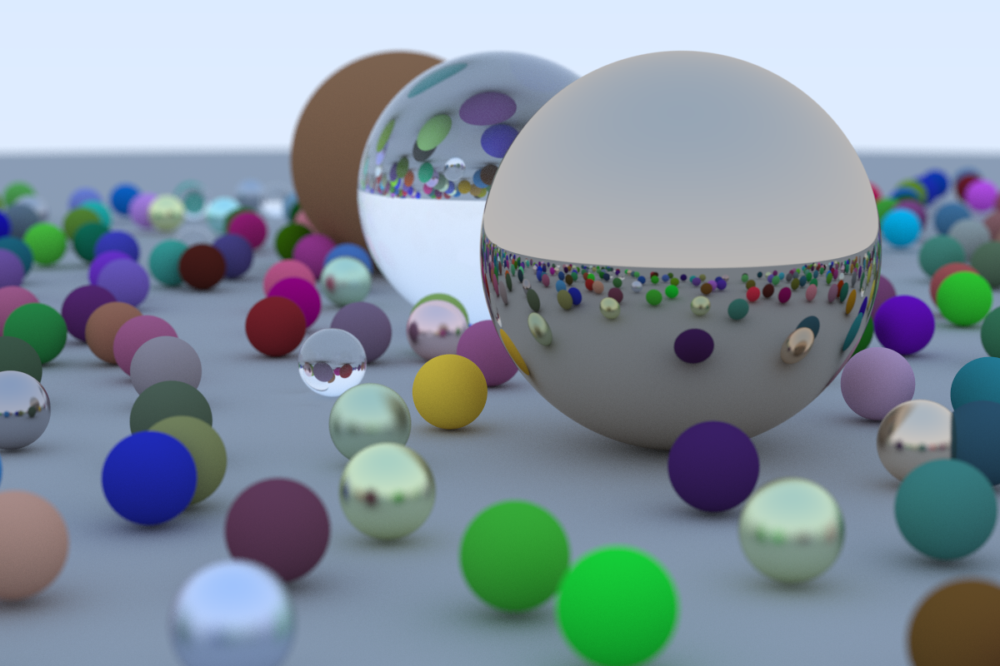

Projects
Ray Tracing

This image is the result of following the book Ray Tracing in One Weekend. My code can be found here.
This image is the result of following the book Ray Tracing in One Weekend. My code can be found here.